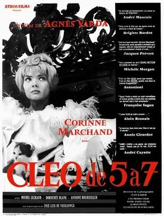

_(cropped).jpg){kind=link}

Explore film ↗Cléo from 5 to 7
Agnès Varda
DIRECTOR PROFILE
Agnès Varda (born Arlette Varda; 30 May 1928 – 29 March 2019) was a Belgian-born French filmmaker, artist, and photographer.

LIFE & CAREER
Agnès Varda (born Arlette Varda; 30 May 1928 – 29 March 2019) was a Belgian-born French filmmaker, artist, and photographer. Varda's work employed location shooting in an era when the limitations of sound technology made it easier and more common to film indoors, with constructed sets and painted backdrops of landscapes, rather than outdoors, on location. Her use of non-professional actors was also unconventional for 1950s French cinema.
Adapted excerpt from Wikipedia, CC BY-SA 4.0. Pronunciation notes omitted.
Read the full biographyImage: Martin Kraft. Source & rights: CC BY-SA 4.0 ↗.
Profile reference: Director background ↗
Open this director checklist ↗
A selection of this director’s films available in the archive.

Explore film ↗Agnès Varda
 Explore film ↗
Explore film ↗Agnès Varda